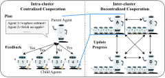

03 / SYSTEM · HIERARCHICAL COOPERATION
Who Should Coordinate a Team of Agents?

1
Plan + check feasibility
2
Share progress across clusters
Original paper figure · one hierarchy, two coordination patterns
ReCA §5.3 · Fig. 8, p. 988
Check
Shurui Hu
8